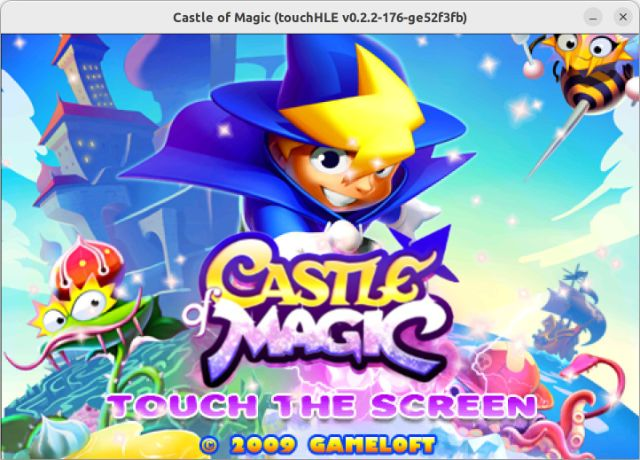
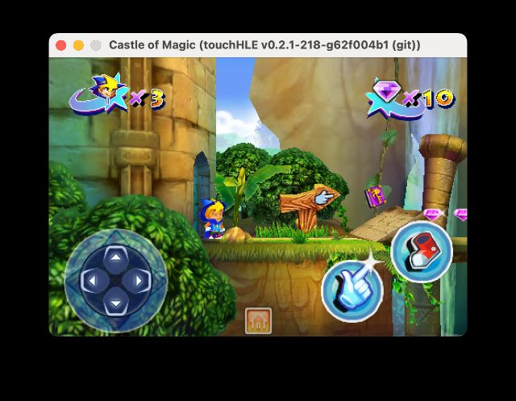

| App name | Castle of Magic |
|---|---|
| Release year | 2009 |
| Developer/Publisher | Gameloft |
| First reported | |
| First reported by | @ciciplusplus |
| Version number | Display name | Bundle identifier | Minimum iOS version | Best rating | Last updated | First reported by | |
|---|---|---|---|---|---|---|---|
| 1.0.1 | Castle of Magic | com.gameloft.CastleofMagic | 2.2.1 | ⭐️⭐️⭐️⭐️⭐️ | @ciciplusplus | ||
| 1.0.4 | Castle of Magic | com.gameloft.CastleofMagic | 2.2.1 | ⭐️⭐️⭐️⭐️⭐️ | @nighto |
| Version number | touchHLE version | Operating system | GPU | Scale hack supported? | Rating | Reported | Reported by | Remarks | Screenshot |
|---|---|---|---|---|---|---|---|---|---|
| 1.0.4 | v0.2.2-1003-g87c0ea5d | Debian GNU/Linux 13 (trixie) x86_64 | NVIDIA GeForce RTX 3050 | Yes | ⭐️⭐️⭐️⭐️⭐️ | @celerizer | Seems to run perfectly; completed first 3 levels | ||
| 1.0.4 | v0.2.2-176-ge52f3fb | Ubuntu 22.04 | Intel UHD Graphics 620 | Yes | ⭐️⭐️⭐️⭐️⭐️ | @nighto | Another version that works, with the same remarks as 1.0.1. | View | |
| 1.0.1 | v0.2.1-218-g62f004b1 | macOS Sonoma 14.4.1 | Apple M1 GPU | Yes | ⭐️⭐️⭐️⭐️⭐️ | @ciciplusplus | Game may crash on exit, it seems to have no impact on the playability. | View |
| Rating | Description |
|---|---|
| ⭐️ | Completely broken: app crashes immediately without any user interaction. |
| ⭐️⭐️ | Only (part of) the main menu, intro or similar is working. |
| ⭐️⭐️⭐️ | Some of the main content of the app works, but with major issues. |
| ⭐️⭐️⭐️⭐️ | The main content of the app works (e.g. entire game is playable) with only small issues. |
| ⭐️⭐️⭐️⭐️⭐️ | Everything works. The app is fully usable. |

